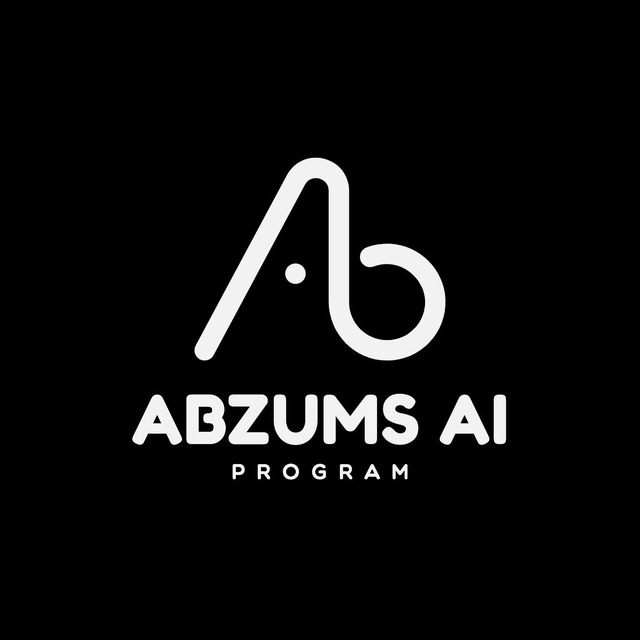

Slide files
Course slides and guide files copied from the chat export, with a first page preview for every PDF.
Open slides
AbzumsAIAI course material for healthcare students
A public home for the course run by the Research and Technology Department of Alborz University of Medical Sciences with MedX Community.
Current material
Course slides and guide files copied from the chat export, with a first page preview for every PDF.
Open slidesStarter, session, masterclass, project, and answer notebooks pass the JSON check.
Open notebooksAssignments 1 to 7 have Python answers and notebook answers with a local test script.
Open answersThe Numpy and Pandas PDF tasks now have editable sources, solutions, checks, and notebooks.
Open assignmentsThe machine learning homework now has its handout, data dictionary, CSV data, and starter check.
Open datasetCourse path
Use the notebook repo for Python practice, class tasks, and submission notes.
Work through assignments, pretest material, and small Python examples from class.
Build PDFs from the LaTeX folders and keep slides ready for each session.
Public repos
Showing all repos
Homework sheets, editable sources, checks, and answer material for the course.
Open repoPython notebooks, submission notes, and checked answer files for class work.
Open repoSmall Python files used for examples and practice.
Open repoExam and solution LaTeX sources for pretest work.
Open repoHomework template, shared course style, and build notes.
Open repoRecovered lecture slides, labels, previews, and slide workflow notes.
Open repoTelegram bot source for common course questions.
Open repoOrganization profile shown on GitHub.
Open repoPublic course site served by GitHub Pages.
Open repoNo repos match this search.